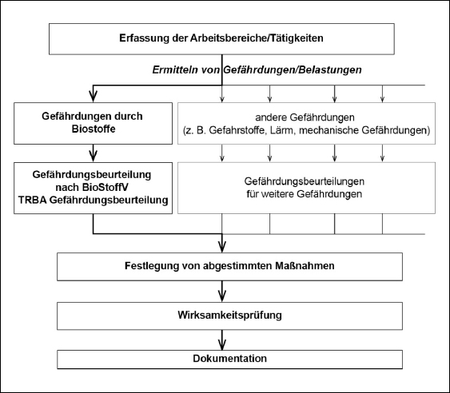

(1) Der Arbeitgeber ist nach § 5 Arbeitsschutzgesetz (ArbSchG) verpflichtet, die Arbeitsbedingungen seiner Beschäftigten daraufhin zu beurteilen, ob deren Gesundheit oder Sicherheit gefährdet ist. Ziel dieser Gefährdungsbeurteilung ist es zu ermitteln, welche Maßnahmen getroffen werden müssen, um die festgestellten Gefährdungen der Beschäftigten zu verhindern. Die Verantwortung für die korrekte Durchführung der Gefährdungsbeurteilung liegt beim Arbeitgeber. Bei gleichartigen Arbeitsbedingungen ist nach § 5 Absatz 2 ArbSchG die Beurteilung eines Arbeitsplatzes oder einer Tätigkeit ausreichend.
(2) Am Arbeitsplatz können neben Biostoffen gleichzeitig weitere unterschiedliche Belastungen oder Gefährdungen bestehen. Diese sind getrennt zu erfassen und zu beurteilen. Die Schutzmaßnahmen sind darauf abzustimmen und müssen alle Gefährdungen berücksichtigen (siehe Abbildung 1).
(3) Der Arbeitgeber kann für seine Gefährdungsbeurteilung die Vorgaben dieser TRBA entsprechend § 4 BioStoffV verwenden, soweit die hier beschriebenen Tätigkeiten und Expositionsbedingungen sich auf die konkret zu beurteilende Situation übertragen lassen. Bei einer fehlenden oder nicht gegebenen Übertragbarkeit sind die entsprechenden Tätigkeiten und die damit verbundenen Gefährdungen entsprechend der TRBA 400 [2] zu beurteilen.

Abb. 1: Gefährdungen durch Biostoffe als Teil der Beurteilung der Arbeitsbedingungen nach § 5 ArbSchG
(4) Werden Beschäftigte mehrerer Arbeitgeber an einem Arbeitsplatz tätig oder werden bestimmte Tätigkeiten im Betrieb an Fremdfirmen vergeben, sind die jeweiligen Arbeitgeber nach § 8 ArbSchG verpflichtet, bei der Durchführung der Sicherheits- und Arbeitsschutzbestimmungen zusammenzuarbeiten. Eine gegenseitige Information über die mit den Arbeiten verbundenen Gefährdungen für Sicherheit und Gesundheit der Beschäftigten ist erforderlich. Ggf. ist die Gefährdungsbeurteilung gemeinsam durchzuführen und insbesondere die Durchführung von Schutzmaßnahmen und der Unterweisung abzustimmen. Der Arbeitgeber muss sich je nach Art der Tätigkeit vergewissern, dass die Beschäftigten anderer Arbeitgeber hinsichtlich der Gefährdungen für ihre Sicherheit und Gesundheit angemessene Anweisungen in der für sie verständlichen Sprache erhalten haben.
(5) Bei einer Arbeitnehmerüberlassung trifft die Pflicht zur einsatz- und betriebsspezifischen Unterweisung den Entleiher. Er hat die Unterweisung unter Berücksichtigung der Qualifikation und der Erfahrung der Personen, die ihm zur Arbeitsleistung überlassen werden, vorzunehmen. Die sonstigen Arbeitsschutzpflichten des Verleihers bleiben unberührt.
(6) Beschäftigte in Arbeitsbereichen, in denen diese durch Tätigkeiten nach § 2 Absatz 7 BioStoffV gefährdet werden können, ohne selbst diese Tätigkeiten auszuüben, sind ebenfalls vor gesundheitlichen Gefährdungen der an den Arbeitsplätzen vorkommenden Biostoffe zu schützen.
(1) Die Gefährdungsbeurteilung nach der BioStoffV muss fachkundig erfolgen. Verfügt der Arbeitgeber selbst nicht über die entsprechenden Kenntnisse, hat er sich fachkundig beraten zu lassen. Regelungen zur erforderlichen Fachkunde enthält die TRBA 200 "Anforderungen an die Fachkunde nach BioStoffV" (Abschnitt 4.1) [3].
(2) Nach § 4 Absatz 2 BioStoffV ist die Gefährdungsbeurteilung mindestens jedes zweite Jahr zu überprüfen, bei Bedarf zu aktualisieren und das Ergebnis zu dokumentieren. Aktualisierungsanlässe sind:
(3) Bei der Gefährdungsbeurteilung sind auch Tätigkeiten zu berücksichtigen, die nur selten oder anlassbezogen durchgeführt werden. Dazu zählen beispielsweise Wartungs-, Reparatur- oder Instandhaltungsarbeiten.
(4) Tätigkeiten im Geltungsbereich dieser TRBA müssen keiner Schutzstufe zugeordnet werden und werden darum auch als Tätigkeiten ohne Schutzstufenzuordnung bezeichnet (§ 6 BioStoffV).
(5) In der Gefährdungsbeurteilung sind entsprechend den ermittelten spezifischen Gefährdungen arbeitsmedizinische Fragestellungen zu beachten und fachkundig beurteilen zu lassen.
(6) Aufgrund der komplexen Gefährdungssituation entsprechend Abschnitt 3.3 hat der Arbeitgeber für eine fachkundige Durchführung der Gefährdungsbeurteilung arbeitsmedizinischen Sachverstand einzubeziehen (vgl. AMR 3.2 [4]). Dem Arzt sind alle erforderlichen Auskünfte über die Arbeitsplatzverhältnisse zu erteilen und die Begehung des Arbeitsplatzes zu ermöglichen.
(1) Im Bereich von abwassertechnischen Anlagen treten in Abwasser und Klärschlamm Biostoffe auf. Zudem findet prozessbedingt eine Vermehrung bestimmter Biostoffe statt.
(2) Gemäß § 3 BioStoffV werden Biostoffe entsprechend des von ihnen ausgehenden Infektionsrisikos in Risikogruppen eingeteilt. In abwassertechnischen Anlagen treten in der Regel Biostoffe der Risikogruppen 1 und 2 auf. Werden Biostoffe der Risikogruppe 3 nachgewiesen oder besteht ein begründeter Verdacht einer entsprechenden Infektion z. B. durch Stichverletzungen mit entsprechend kontaminierten Spritzen im Rechengut, kann dies jedoch zu einer besonderen Gefährdung für den Menschen führen. Daher ist die zuständige Aufsichtsbehörde unverzüglich zu unterrichten, wenn ein Unfall oder eine Betriebsstörung bei Tätigkeiten mit Biostoffen der Risikogruppe 3 vorliegt, die die Gesundheit der Beschäftigten gefährden kann (§ 17 Absatz 1 BioStoffV). Tätigkeiten im Zusammenhang mit Biostoffen der Risikogruppe 4 werden im Anwendungsbereich dieser TRBA nach bisherigem Kenntnisstand nicht durchgeführt.
(3) Von einigen Schimmelpilzarten sind sensibilisierende Wirkungen bekannt. Zu Schimmelpilzbewuchs kann es auf Oberflächen von entwässertem Klärschlamm, Rechengut oder Schacht-/Kanalwänden kommen. Erfahrungsgemäß führen erst längerfristige Expositionen gegenüber atemwegssensibilisierenden Biostoffen in hoher Konzentration zu einer Sensibilisierung bis hin zu schwerwiegenden allergischen Erkrankungen [5]. Einige Bakterien (u. a. Thermoactionomyces vulgaris) tragen ein sensibilisierendes Potenzial, welches beim Einatmen zu einer Gefährdung führen kann.
(4) Toxische Wirkungen können Zellwandbestandteile abgestorbener Mikroorganismen entfalten, wie z. B. Endotoxine von gramnegativen Bakterien und Glucane von Pilzen [6]. Dies gilt auch für Stoffwechselprodukte, zum Beispiel Mykotoxine.
(5) Es kommt zu einer mikrobiellen Mischexposition der Beschäftigten, wobei die Expositionsverhältnisse zeitlich und räumlich starken Schwankungen unterliegen. Die dabei jeweils auftretenden Biostoffe sind nicht im Einzelnen nach Art, Menge und Zusammensetzung bekannt.
(6) Die Gefährdung durch Biostoffe wird maßgeblich durch deren Eigenschaften sowie Menge, Umfang der Freisetzung und Verbreitung, Art, Dauer und Häufigkeit des Kontakts bestimmt.
(7) Bei der Beschaffung von Informationen für die Gefährdungsbeurteilung sind neben den zu erwartenden Biostoffen, Höhe, Dauer und Häufigkeit der Exposition sowie weitere Sachverhalte zu ermitteln, z. B.
(8) Die Wege für die Aufnahme und Übertragung von Biostoffen sind:
| a) | durch Spritzer, |
| b) | durch Essen, Trinken und Rauchen oder Schnupfen ohne vorherige Reinigung der Hände, |
| c) | durch jeglichen Hand-Mund-Kontakt auch über kontaminierte Arbeits- oder Schutzkleidung oder PSA. |
| a) | durch Eindringen bei Hautverletzungen, |
| b) | durch Spritzer in die Augen und Nase, |
| c) | bei verminderter Schutzbarriere, z. B. durch Nässe aufgeweichte oder erkrankte Haut, |
| d) | durch alle Hand-Gesicht-Kontakte, |
| e) | durch Kontakt mit kontaminierter Arbeits- oder Schutzkleidung oder kontaminierten PSA. |
Zu beachten ist, dass viele Infektionserreger nicht nur über einen, sondern auch über mehrere der oben genannten Übertragungswege aufgenommen werden können.
(9) Hauptaugenmerk gebührt der oralen Aufnahme aufgrund von Hand-Mund-Kontakten (Schmierinfektion) und der inhalativen Aufnahme von Aerosolen vor allem bei Hochdruckspül- und Saugverfahren [7], über Belebungsbecken, durch Dunstbildung über Klärbecken, bei Abstürzen und Abschlägen sowie Sohlgleiten im Kanal und bei Arbeiten mit Hochdruckreinigern/Flüssigkeitsstrahlern.
(10) Besondere Gefährdungen bestehen:
(11) Eine Gefährdung kann durch die Übertragung von Biostoffen durch Nagetiere, Vögel oder andere Tiere und deren Ausscheidungen bestehen.
(12) Im Anhang 1 wird ein Überblick gegeben, welche Biostoffe nach derzeitigem Stand im Abwasserbereich hinsichtlich einer Gefährdung der Gesundheit zu berücksichtigen und wie sie zu beurteilen sind.